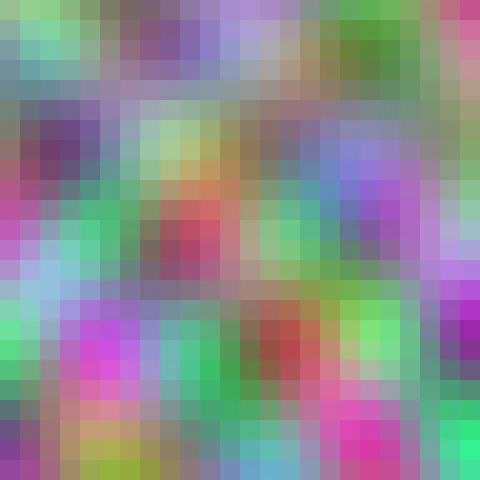

SatellitSatellite PunktwolkePoint cloud
PunktwolkePoint cloudNationalpark Schwarzwald, DeutschlandBlack Forest National Park, Germany
Bergmischwald aus Fichte, Tanne und Buche, der Wald vor unserer Haustür.
Mountain mixed forest of spruce, fir and beech: the forest on our doorstep.